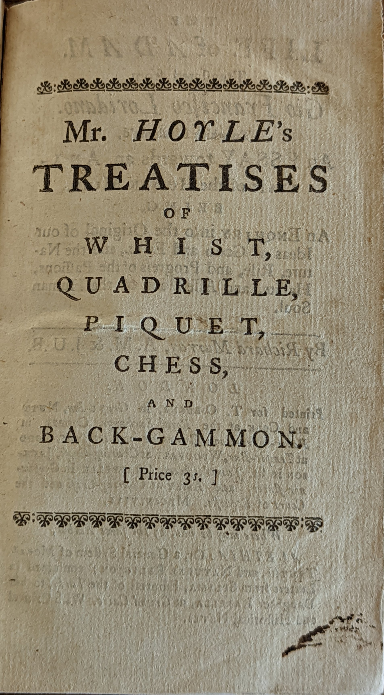
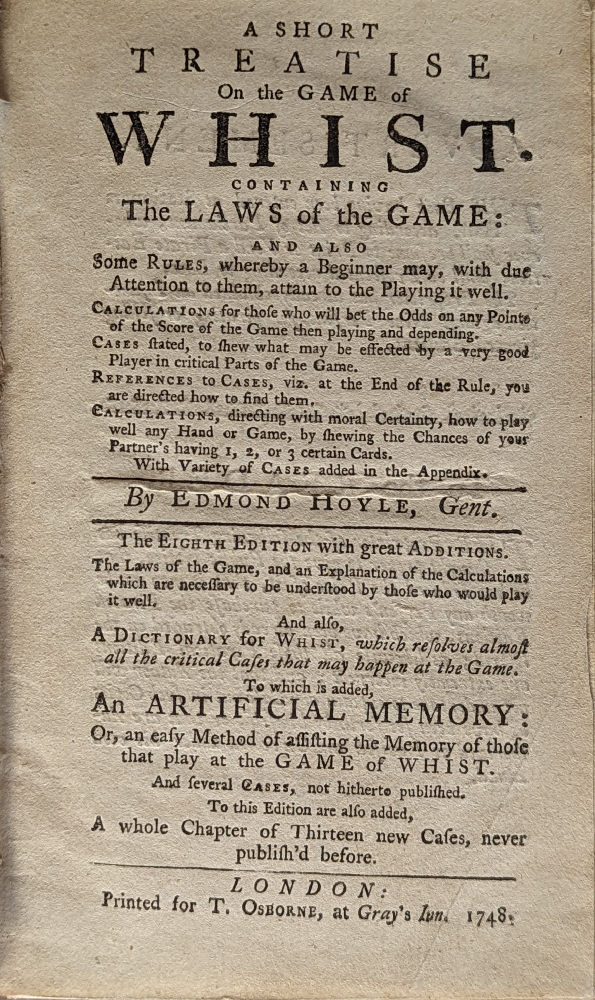

A Descriptive Bibliography of Edmond Hoyle
Copyright © 2014-26 by David Levy
(page updated 2026-01-30)User Guide
Games.1.1
Mr. Hoyle's Treatises, printed for T. Osborne, first London edition, “eighth” edition, 1748.
| Collation: | 12o: [A]2 B–D12 E6 F–L12 [$½ (−B6,F1,G2,3,I5,6,L5,6) signed; signing F3 as A3, F5 as A5]; 116 leaves, pp. [4 ] [1] 2–84 [97–99] 100–123 [124–127] 128–177 [178–180] 181–224 [225–240] [=228] |
| Half Title: |  |
[row of type orn] | Mr. HOYLE’s | TREATISES | OF | WHIST, | QUADRILLE, | PIQUET, | CHESS, | AND | BACK-GAMMON. | {Price 3s.} | [row of type orn] |
| Section Title Whist |  |
A SHORT | TREATISE | On the GAME of | WHIST. | CONTAINING | The LAWS of the GAME: | AND ALSO | Some Rules, whereby a Beginner may, with due | Attention to them, attain to the Playing it well. | Calculations for thoſe who will bet the Odds on any Points | of the Score of the Game then playing and depending. | Cases ſtated, to ſhew what may be effected by a very good | Player in critical Parts of the Game. | References to Cases, viz. at the End of the Rule, you | are directed how to find them. | Calculations, directing with moral Certainty, how to play | well any Hand or Game, by ſhewing the Chances of your | Partner’s having 1, 2, or 3 Certain Cards. | With Variety of Cases added in the Appendix. | [rule] | By Edmond Hoyle, Gent. | [rule] | The Eighth Edition with great Additions. | The Laws of the Game, and an Explanation of the Calculations | which are neceſſary to be underſtood by thoſe who would play | it well. | And alſo, | A Dictionary for Whist, which reſolves almoſt | all the critical Caſes that may happen at the Game. | To which is added, | An ARTIFICIAL MEMORY: | Or, an eaſy Method of aſſiſting the Memory of thoſe | that play at the GAME of WHIST. | And ſeveral Cases, not hitherto publiſhed. | To this Edition are alſo added, | A whole Chapter of Thirteen new Caſes, never | publiſh'd before. | [rule] | LONDON: | Printed for T. Osborne, at Gray's Inn. 1748. |
| Section Title Quadrille | A SHORT | TREATISE | On the GAME of | QUADRILLE. | SHEWING | The Odds of winning or loſing moſt | Games that are commonly played; | either by calling a King, or by playing | Sans Prendre, | To which are added, | The LAWS of the GAME. | [rule] | The Second Edition. | By Edmond Hoyle, Gent. | [rule] | LONDON: | Printed for T. Osborne, at Gray's-Inn; J. Hild-|yard, at York; M. Bryson, at Newcaſtle; and | J. Leake, at Bath. M DCC XLVIII. | {Price One Shilling.} |
| Section Title Piquet and Chess | A SHORT | TREATISE | On the GAME of | PIQUET. | Directing with Moral Certainty how to Diſ-|card any Hand to Advantage, by ſhew-|ing the Chances of taking in any one, | two, three, four, or five certain Cards. | Computations for thoſe who Bet their | Money at the Game. | Alſo the Laws of the Game. | To which are added, | Some Rules and Observations for playing well | at CHESS. | [rule] | The Third Edition. | [rule] | By Edmond Hoyle, Gent. | [rule] | LONDON: | printed for T. Osborne, at Gray's-Inn. | M DCCXLVIII. |
| Section Title Backgammon | A SHORT | TREATISE | On the GAME of | Back-Gammon. | CONTAINING | [11 lines to left of rule] A Table of the thirty-ſix | Chances, with Directions | how to find out the Odds of | being hit, upon ſingle, or | double Dice. | Rules whereby a Beginner may, | with due Attention to them, | attain playing it well. | The ſeveral Stages for carry-|ing your Men home, in or-|der to loſe no Point. | [12 lines to right of rule] How to find out who is for-|wardeſt to win a Hit. | Caſes ſtated for Back-Games, | with Directions how to | play for one. | Caſes ſtated, how to know | when you may have the | better of ſaving a Gammon | by running. | Variety of Caſes of Curioſity | and Inſtruction. | The Laws of the Game. | [rule] | The Third Edition. | By Edmond Hoyle, Gent. | [rule] | [tailpiece Spedding T10] | LONDON: | Printed for T. Osborne, at Gray's-Inn. | M DCCXLVIII. |
| Contents: | Signature (Page) Reference | Contents | Signature (Page) Reference | Running Titles |
| A1r | half title | |||
| A1v | Advertisement for The Life of Adam. | |||
| A2r | section title Whist | |||
| A2v | ‘ADVERTISEMENT. | [...] | To the READER. | [...] | [autograph of Edmond Hoyle]’ | |||
| B1r–E6v (1–84) | ‘[headpiece Spedding H09] | A SHORT | TREATISE | On the GAME of | WHIST. | [...]’ | B1v–E5r (2–81) | ‘A ſhort Treatise on | the Game of Whist.’ | |
| on B12r (23), C12r (47), D11r (69) | ‘the Game of Whist’ | |||
| F1r (97) | section title Quadrille | |||
| F1v (98) | blank | |||
| F2r–G2r (99–123) | ‘[headpiece Spedding H18] | A Treatiſe on the Game of | QUADRILLE. | [...]’ | F2v–G2r (100–123) | ‘A ſhort Treatise on the | Game of Quadrille.’ | |
| G2v (124) | blank | |||
| G3r (125) | section title Piquet and Chess | |||
| G3v (126) | blank | |||
| G4r–H9r (127–161) | ‘[headpiece Spedding H06] | A | TREATISE | On the GAME of | PIQUET. | [...]’ | G4v–H9r (128–161) | ‘A Treatiſe on Piquet.’ | |
| H9v–I5r (162–177) | ‘[headpiece Spedding H07] | SOME | Rules and Observations | FOR | Playing well at CHESS. | [...]’ | H10r–I5r (163–177) | ‘Rules and Obſervations | for playing at CHESS.’ | |
| I5v (178) | blank | |||
| I6r (179) | section title Backgammon | |||
| I6v (180) | blank | |||
| I7r–L4v (181–224) | ‘[headpiece Spedding H10] | A Short | TREATISE | On the GAME of | Back-Gammon. | [...]’ | I7v–L4r (182–223) | ‘A ſhort Treatise on | the Game of Back-Gammon.’ | |
| L4v (224) | ‘A ſhort Treatise on &c.’ | |||
| L5r–L10v (225–236) | ‘[headpiece Spedding H07] | THE | CONTENTS. | [...]’ | L5v–L6v (226–228) | ‘The CONTENTS.’ | |
| L9r–L10v (233–236) | ‘The CONTENTS.’ | |||
| L11r–L12r (237–239) | ‘[two rows of type orn] | BOOKS printed for T. Osborne, | Bookſeller in Gray's-Inn. | [...]’ | L11v–L12r (238–239) | ‘BOOKS printed for T. Osborne.’ | |
| L12v (240) | blank |
| Catchwords: | D7r(61) trump, [trump]; D9v(66) or [four]; D12v(72) Hand, [Hands,]; E3r(77) An [CHAP.]; F5v(106) XV [XV.]; I12r(191) VII. [VIII.]; L1r(217) VII [VII.]; L5r(225) PHAP. [CHAP.] |
| Publisher: | Thomas Osborne |
| Printer: | Thomas Gardner (ornaments) |
| Notices: | 1748-03-05 Whitehall Evening Post or London Intelligencer: "On Monday next will be published, in a neat pocket volume, the eighth
edition, price only 3s in Marvell binding. To which are added, thirteen new
cases never before published in whist. Mr Hoyle's Games compleat; containing
his treatises of Whist, Quadrille, Piquet, Chess, and Backgammon...The laws
of the game of whist may be had alone, on a sheet of paper, to hang up in
public or private houses, where the game is played, price 6d." 1748-09-12 The New-York Gazette, Revived in the Weekly Post-Boy: "Books and stationary just imported from London, in the last ships, and to be sold at the New Printing-Office in Beaver-Street...Hoyle's Games." |
| Price: | 3s. (half title, advertisement) |
| References: | ESTC T79890, Horr 654, Jessel 800, Marshall s7 no.8 p343 (1889-11-02), Rather 30 |
| Copies Seen: | L [1493.l.38] (ECCO); O [Jessel f.549]; O [Jessel f.550]; Onu [SpC CB26]; Copisarow; NNPM [E3 092 D 079487]; NvLN [GV1241.H69 1755]; NvLN [GV1243.H69 1748b]; Levy [1555]; Levy [1785] |
| Other Copies: | C [H.24.20]; Ct [H24.20[2]]; Depaulis; Secelle; CtY-LW [63.748.H85]; LU [GV1277.H89 1748]; MH [Widener SG 3652.148]; NIC [GV1277.H89 1748]; NjP [42789.479]; NjP [42845.479.5] (Google); TxSaC [795.4.H868] |
| Notes: | The titles and edition statements for the Osborne editions of Hoyle are a source of confusion, a confusion that begins with this work. Despite the irregular pagination and some contrary indications in the section on quadrille, this book was issued only as a collected edition. It was the first such Osborne Hoyle, hence my designation as Games.1.1. The book lacks an overall title page, though the half title identifies the book as Mr. Hoyle's Treatises. Advertisements refer to it as Mr. Hoyle's Games Compleat. It is referred to as an "eighth" edition because of the section title of whist, and indeed there are seven previous authorized London editions of the whist treatise.The book was reissued a number of times, all the same setting of type with different preliminaries. William Reeve sold a "ninth" edition titled The Accurate Gamester's Companion with the "eighth" edition of whist (Games.1.2). Osborne reissued the book in 1750 (Games.1.3) with no collected title page and a section title for the "tenth" edition of whist. Reeve issued the same book with the "ninth" edition collected title page and the "tenth" edition of whist. (Games.1.4). A final version appeared in 1755 with a new section title for whist, although still a "tenth" edition. (Games.1.5). The "eleventh", Games.2, is the next edition with a new setting of type.The section on quadrille suggests that Osborne planned to issue it separately until late in the printing process. In all copies the outer forme of gathering F is signed ‘A’ and in some copies the inner forme is as well. There are copies where the pages are numbered 1–24 rather than 101–24. It is the only section title with a price and and imprint which includes Osborne's provincial distributors. Nonetheless, no separate copies survive and dozens of contemporary advertisements mention only the collected work. |